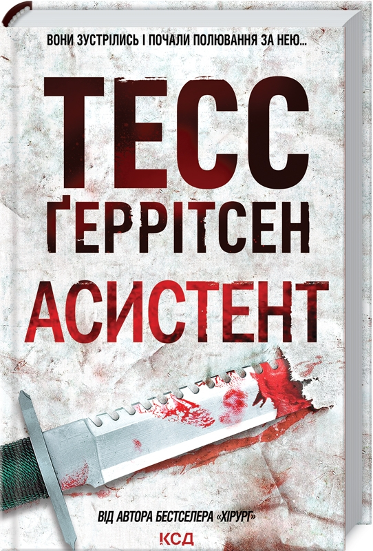

Зміст
Хірург
Він приходить лише у ночі. Безшумно проникає у дім. Крадеться до спальні, де тільки но прокинувшись від сну, самотні жінки потрапляють до приголомшливого кошмару. Зважаючи на те, що він робить зі своїми жертвами, можна припустити, що злодій знається на медицині. Саме через це його називають Хірург.
Томас Мур та Джейн Ріццолі розслідують серію страшенних вбивств. Злочинець наслідує почерк серійного маніяка, якого було вбито два роки тому. Він копією навіть такі дрібні деталі, про які мало кому відомо. Остання з жертв загиблого маніяка Кетрін Корделл, вбила його, та саме через це стає метою нового вбивці. З кожною наступною жертвою невідомий наближається до Кетрін. Саме Томасу та Джейн доведеться зупинити геніального вбивцю, чого б це не коштувало.
Асистент
Рік тому детективу Джейн Ріццолі вдалося вистежити злочинця на прізвисько Хірург, якого називали Джеком-Різником ХХI століття. Тоді Джейн дивом врятувалася від убивці і посадила його за грати. Та ось на вулицях з’явився новий злочинець. Він копіює почерк Хірурга як асистент повторює рухи досвідченого лікаря. А невдовзі і сам Хірург тікає з в’язниці. Тепер убивць двоє. Їхніми жертвами стають нові й нові жінки. І ось Дженн розуміє, що наступною жертвою має стати вона...
Грішна
Бостон приголомшує жахлива звістка: у місцевому монастирі жорстоко вбито молоду послушницю. А незабаром стається ще одне вбивство: у закинутому ресторані знайдено понівечене тіло невідомої жінки. Здається, що ці два злочини аж ніяк не пов’язані між собою. Детектив Ріццолі та судмедекспертка Айлз починають складне розслідування. Крок за кроком вони заглиблюються в минуле жертв. Незабаром вони дізнаються, що у священних стінах монастиря коїлося таке, про що черниці воліли б мовчати. Спокуси та страшні секрети, таємниці індійського селища Бара, моторошні події минулого... І тепер прийшов час спокути...
Двійник
Мора Айлз бачила чимало страшних речей. Коли працюєш судмедекспертом, вже не боїшся смерті. На секційний стіл потрапило тіло жінки, як дві краплі води схожої на Мору. Судмедексперта охопив справжній жах. Хто ця незнайомка? Загадкова сестра-близнючка? Чи це просто збіг? Але якщо так, то на кого насправді полював убивця: на цю дівчину чи на Мору? Можливо, це попередження? Час знайти відповіді на всі запитання, випередивши вбивцю та вийшовши на слід того, хто роками уникав правосуддя...
Смертниці
Мертва дівчина в морзі виявляється... живою. Патологоанатом Мора Айлз помічає це випадково і рятує її. Проте смертниця не квапиться дякувати. Вона вбиває охоронця й бере у заручники працівників та пацієнтів лікарні. Серед них — вагітна детектив Джейн Ріццолі. Мора і чоловік Джейн, ФБР-івець Гебріел, намагаються з’ясувати, кому і за що мститься незнайомка. Але вашингтонський спецзагін, який вривається до лікарні, розстрілює смертницю. В останню мить дівчина встигає шепнути Джейн одну-єдину фразу. Це — ключ, за допомогою якого можна відімкнути двері від злочинних секретів найвищих владних ешелонів США.
Клуб Мефісто
Це Різдво мало стати дивом. А перетворилося на кошмар. На очах Джейн Ріццолі руйнується багаторічний шлюб її батьків, а подруга Мора зізнається у гріховних стосунках зі священником. Одне за одним відбуваються моторошні вбивства, схожі на ритуальні жертвоприношення. Шокована детектив Ріццолі починає свою звичну роботу: пошук убивці. Розслідування виводить Джейн на таємничий фонд «Мефісто», члени якого переконані: ці вбивства — справа рук демона, що ходить поміж людей. Що в їхніх словах правда, а що — вигадка? Що приховує директор фонду, Ентоні Сансоне? І чи справді його організація прагне допомогти, чи лишень зводить поліцію на манівці? Запитань так багато. А тим часом убивця вже готовий завдати нового удару...
Хранителі Смерті
У підвалі музею знайдено загадкову мумію, яка не числиться серед експонатів. Та під час експертизи Мора Айлз доходить приголомшливих висновків. Фальшива знахідка Стародавнього Єгипту виявляється тілом нещодавно вбитої жінки. Убивця муміфікував її в найкращих традиціях єгиптян. За цю моторошну справу береться поліція і особисто Джейн Ріццолі. Незабаром у підземеллі знаходять інші «законсервовані» жіночі тіла. Хто стоїть за цим: серійний убивця, схибнутий на давньому мистцеві муміфікації, чи просто псих? Та детектив Джейн не знає, що в його колекції бракує ще однієї жертви. Заради неї він ладен убивати знову і знову. Смертельна небезпека загрожує всім, хто стане на шляху маніяка. Він не відчуватиме жалю, проливаючи кров невинних. Але що він зробить тоді, коли нарешті вполює свою останню жертву, знайшовши її через стільки років?
Убивчий холод
Потрапивши в аварію на засніженій гірській дорозі, докторка Мора Айлс та її приятелі вимушені шукати прихисток у селищі з химерною назвою Царство Небесне. Це місце не позначене на мапах, тут немає електрики і відсутній мобільний зв’язок… А ще навколо ні душі - лише дванадцять ідентичних будинків, незамкнених, із відчиненими вікнами, незайманою замерзлою їжею на столах й однаковим портретом чорнявого чоловіка з проникливим поглядом у кожній вітальні.
В одному з будинків Мора наштовхується на моторошну знахідку - калюжу засохлої крові на дерев’яній підлозі біля підніжжя сходів. Чи тут було скоєно вбивство? Чи причетні до цього зниклі місцеві? Чи, може, в околиці орудує небезпечний злочинець? Пошуки правди наразять Мору і її товаришів на певну смерть…
Дівчина, яка мовчить
Детектив Джейн Ріццолі менш за все вірила в те, що колись розслідуватиме витівки… потойбічних сил? Утім саме таке пояснення вона отримує, коли прибуває на місце злочину в бостонський Чайна-таун. Привид-убивця, що відрубує жінкам руки та перерізає горлянки, залишаючи поряд із жертвою жмутик чужого волосся. Джейн переконана: містикою тут і не пахне. Хтось цілком живий та реальний розпочав криваву різанину в місті. Розслідування виводить детективів на подію майже двадцятирічної давності: масове вбивство у китайському кварталі Бостона. Хтось вирішив повторити криваву історію з минулого? Чи завершити те, що почав колись?
Останній, хто помре

Троє підлітків опиняються в одній школі. Жахлива трагедія зруйнувала життя кожного з них.
Сім’ю Тедді було вбито на борту власної яхти під час навколосвітньої подорожі. Батьків Клер застрелили в автомобілі. Родина Віла загинула в авіатрощі. Кожен із цих дітей — єдиний, хто вцілів зі всієї родини. Але чи надовго?
Коли Джейн Ріццолі бачить закривавлених ляльок на дереві біля школи, де переховуються діти, серце її пропускає удар. Хижак повідомляє, що підлітки — його здобич, і він не відступить. Разом із судмедексперткою Морою Айлс детектив Ріццолі робить перший крок по сліду вбивці…
Померти знову
Найнебезпечніший хижак савани розпочинає полювання в Бостоні.
Відомий мисливець знайдений убитим. Тіло настільки понівечене, що, схоже, його розірвав дикий звір. Але судмедекспертка Мора Айлз упевнена: це було полювання монстра в людській подобі — й далеко не перше.
Шість років тому група туристів вирушила до Ботсвани на екстремальне сафарі, але так і не повернулася. Хтось влаштував на мисливців смертельні лови, вбиваючи їх одного за одним. І тепер Ріццолі пропонує єдиній вцілілій у тому жахливому сафарі людині знову ризикнути життям — стати приманкою. Адже хижак не зможе пройти повз таку жадану здобич…